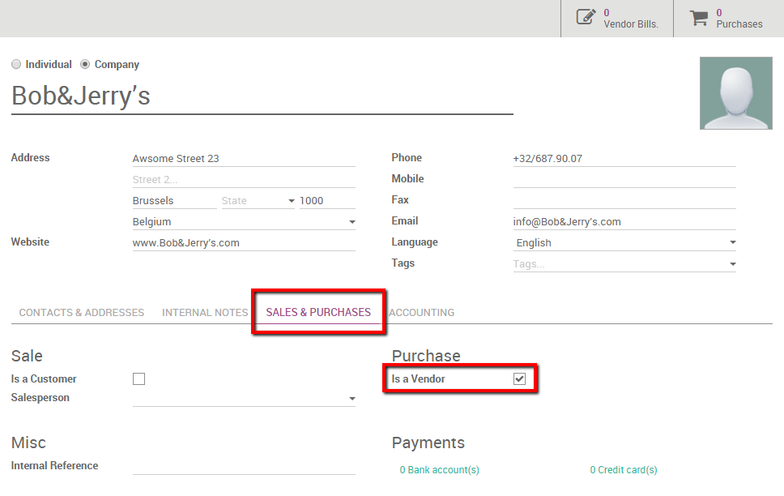
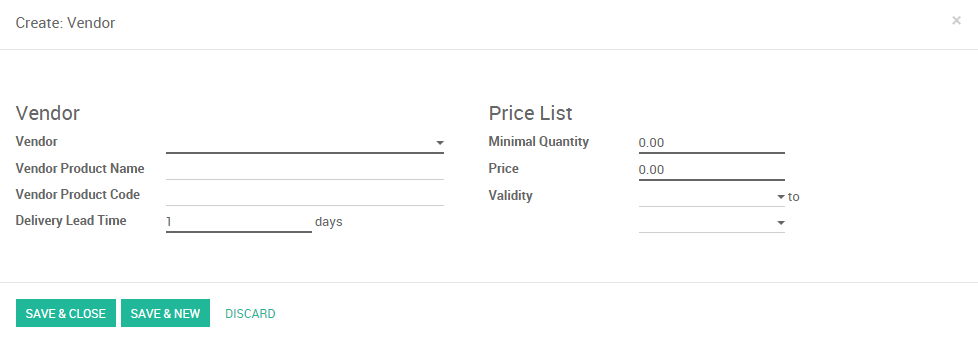

Keeping track of your vendors can be a real burden in day-to-day business life. Prices can change and you might have several suppliers for one product. With YuanCloud you have the possibility to directly link vendors with the corresponding product and specify prices automatically the first time you purchase them.
We will take the following example: We need to buy 5 t-shirts. We found
a Vendor; called Bob&Jerry's and we want to issue a request for
quotation.
配置
安装 purchase 模块
The first step to set your suppliers on your products is to install the purchase module. Go into your App module and install the Purchase module.

注解
By installing the purchase module, the inventory and invoicing module will be installed as well.
创建供应商
The second step is to create a vendor. In this case we'll create the
vendor Bob&Jerry's. Enter the purchase module, select
and create a new vendor.
You can choose if the contact is a company or a person, fill in basic information such as address, phone, email,...
If you did not create the contact from the purchase module you will need to go in the Sales and Purchases tab as well and indicate that the contact is a Vendor (see picture below). If the contact is created from the purchase module this box will be ticked automatically.
创建产品
Next we can create the product we want to buy. We don't know the price of the t-shirt yet because we still need to issue our Request for Quotation.
To create a product enter your purchase module select and create a new product.
We will call our product T-shirt and specify that the product can be
sold and purchased.
给产品添加可供货的供应商
The next action is to add vendors to the product. There are two ways to handle this. If you issue a purchase order for the first time YuanCloud will automatically link the vendor and its price to the product. You can also add vendors manually
通过发布第一个到新的供应商的采购订单
When issuing a purchase order for the first time to a vendor, he will
automatically be linked to the product by YuanCloud. For our example let's
say that we issue a first purchase order to Bob&Jerry's for 5 t-shirts
at 12.35 euros / piece.
First create your purchase order with the correct product and supplier (see picture below, or the documentation page How to create a Request for Quotation? for more information)

When we save and validate the purchase order the vendor will automatically be added to the product's vendors list. To check this enter the purchase module, select and select our T-shirt product. By opening the Inventory tab we notice that our vendor and its price has automatically been added.
Note that every first time the product is purchased from a new vendor, YuanCloud will automatically link the contact and price with the product.
手工的添加
We can of course also add vendors and vendors information manually. On the same page than previously, simply click on Edit and click the Add an item button.

When adding a new Vendor you are also able to add extra information such as the vendor product name or code, the validity of the price and the eventual minimum quantity required. These informations can be added and modified for existing vendors by simply clicking on the vendors line.
